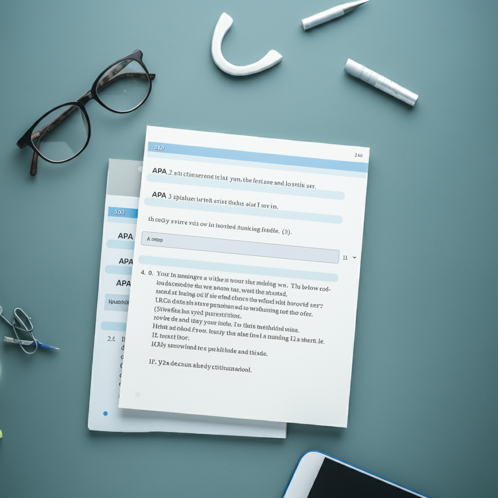

Normas principales de la netiqueta
La netiqueta es un conjunto de normas y convenciones que se utilizan para comunicarse de manera efectiva en línea. A continuación, te presento algunas de las normas principales:
1. Respeto y cortesía: Mantén un tono respetuoso y cortés en tus mensajes y comentarios en línea. Evita el lenguaje ofensivo, el bullying y el acoso.
2. Identificación: Asegúrate de que tu perfil o cuenta esté completo y actualizado, incluyendo una foto de perfil y una biografía breve.
3. Autenticisdad: Sé honesto y auténtico en tus comunicaciones en línea. No mientas sobre quién eres o lo que haces.
4. Privacidad: Respetar la privacidad de los demás. No comparte información personal o confidencial sin permiso.
5. Comunicación clara: Comunica tus ideas de manera clara y concisa. Evita el lenguaje técnico o jargon que pueda ser difícil de entender.
6. No spam: No envíes spam o correos electrónicos no solicitados. Evita enviar mensajes publicitarios o promocionales sin permiso.
7. No phishing: No envíes correos electrónicos que intenten obtener información confidencial o que intenten hacer que los usuarios revelen sus credenciales de acceso.
8. No hacking: No intentes acceder a cuentas o sistemas sin permiso. No realices actividades de hacking o piratería.
9. No bullying: No seas agresivo o hostil en tus comunicaciones en línea. No acosas o intimidas a otros usuarios.
10. No propaganda: No compartas propaganda o contenido político o religioso que pueda ser ofensivo o divisivo.
11. No violencia gráfica: No compartas contenido gráfico o violento que pueda ser ofensivo o perturbador.
12. Respeto a la propiedad intelectual: No compartas contenido protegido por derechos de autor sin permiso. Respetar la propiedad intelectual de los demás.
13. No envíes correos electrónicos vacíos: No envíes correos electrónicos vacíos o sin contenido. Esto puede ser considerado como spam.
14. No envíes correos electrónicos con errores: Asegúrate de que tus correos electrónicos estén bien escritos y no contengan errores de ortografía o gramática.
15. No envíes correos electrónicos con archivos adjuntos no solicitados: No envíes archivos adjuntos no solicitados o que puedan ser considerados como spam.
16. No envíes correos electrónicos con enlaces no verificados: No envíes enlaces no verificados o que puedan ser considerados como fraudulentos.
17. No envíes correos electrónicos con contenido ofensivo: No envíes correos electrónicos con contenido ofensivo, discriminatorio o que pueda ser considerado como inapropiado.
18. No envíes correos electrónicos con contenido duplicado: No envíes correos electrónicos con contenido duplicado o que ya hayan sido enviados anteriormente.
19. No envíes correos electrónicos con contenido no relevante: No envíes correos electrónicos con contenido no relevante o que no estén relacionados con el tema o la conversación.
20. No envíes correos electrónicos con contenido que violen las normas de la comunidad: No envíes correos electrónicos que violen las normas de la comunidad o que puedan ser considerados como inapropiados.
<
La netiqueta es importante porque ayuda a crear un ambiente de confianza y respeto en línea. Al seguir estas normas, puedes mejorar tus relaciones en línea y evitar conflictos. (Recuerda que la netiqueta es un conjunto de normas y convenciones que se utilizan en la comunicación en línea, y que es importante ser consciente de ellas para mantener una comunicación respetuosa y constructiva en la red.)
Phishing
El phishing es una técnica de ciberataque en la que los delincuentes intentan engañar a las personas para que revelen información confidencial, como contraseñas, números de tarjetas de crédito o datos bancarios. Funciona así:
1. Suplantación de identidad: Los atacantes se hacen pasar por entidades legítimas, como bancos, redes sociales o servicios conocidos.
2. Comunicación engañosa: Envían mensajes (por correo electrónico, SMS, redes sociales) que parecen auténticos.
3. Creación de urgencia: A menudo incluyen un sentido de urgencia para que la víctima actúe rápidamente sin pensar.
4. Enlaces o formularios falsos: Dirigen a la víctima a sitios web falsos que imitan a los reales.
5. Robo de información: Cuando la víctima introduce sus datos, estos son capturados por los ciberdelincuentes.
Algunas señales de alerta de phishing incluyen:
- Errores gramaticales o de ortografía
- URLs sospechosas o diferentes a las oficiales
- Solicitudes inusuales de información personal
- Remitentes desconocidos o sospechosos
Para protegerse, es importante verificar siempre la autenticidad de los mensajes, no hacer clic en enlaces sospechosos y nunca proporcionar información sensible a través de enlaces no solicitados.
<Bases científicas y para qué sirven
Las bases científicas son fundamentales para entender cómo funciona el mundo que nos rodea. A continuación, te presento algunas de las bases científicas más importantes:
En psicología, las bases científicas se refieren a los principios y teorías que se basan en la investigación y la observación empírica, y que se utilizan para explicar y predecir el comportamiento humano y los procesos psicológicos. Estas bases científicas son fundamentales para la práctica de la psicología, ya que permiten a los psicólogos comprender mejor los procesos psicológicos, desarrollar teorías y modelos que expliquen el comportamiento, y crear intervenciones y tratamientos efectivos.
Estas bases científicas son fundamentales para la práctica de la psicología porque:
1:Permiten a los psicólogos comprender mejor los procesos psicológicos y desarrollar teorías y modelos que expliquen el comportamiento.
2:Permiten a los psicólogos crear intervenciones y tratamientos efectivos para problemas psicológicos.
3:Permiten a los psicólogos evaluar y mejorar sus prácticas y teorías.
4:Permiten a los psicólogos comunicar sus hallazgos y teorías de manera clara y concisa.
En resumen, las bases científicas en psicología son fundamentales para la comprensión y el tratamiento de los problemas psicológicos. Permiten a los psicólogos comprender mejor los procesos psicológicos, desarrollar teorías y modelos que expliquen el comportamiento, y crear intervenciones y tratamientos efectivos.
<Las bases científicas son importantes porque nos permiten comprender y explicar el mundo que nos rodea. Al entender cómo funcionan las cosas, podemos tomar decisiones informadas y mejorar nuestras vidas.
Cultura digital
La cultura digital se refiere al conjunto de prácticas, costumbres y formas de interacción social que han surgido y evolucionado con el desarrollo y la adopción generalizada de las tecnologías digitales. Esta cultura abarca diversos aspectos de la vida moderna influenciados por la tecnología. Aquí tienes una explicación más detallada:
1. Conectividad constante:
- Acceso permanente a internet y redes sociales
- Comunicación instantánea a nivel global
2. Nuevas formas de expresión:
- Memes, GIFs, emojis como lenguaje visual
- Creación y compartición de contenido multimedia
3. Identidad digital:
- Perfiles en línea y presencia en redes sociales
- Gestión de la reputación online
4. Cambios en el consumo de información:
- Noticias en tiempo real y citizen journalism
- Acceso a vastas cantidades de información
5. Economía digital:
- E-commerce y nuevos modelos de negocio
- Criptomonedas y fintech
6. Educación y aprendizaje:
- E-learning y MOOCs
- Acceso a recursos educativos abiertos
7. Entretenimiento digital:
- Streaming de video y música
- Videojuegos y realidad virtual
8. Nuevas formas de trabajo:
- Teletrabajo y colaboración en línea
- Gig economy y freelancing digital
9. Activismo digital:
- Movimientos sociales organizados en línea
- Campañas virales y hashtag activism
10. Ética y privacidad digital:
- Debates sobre el uso de datos personales
- Ciberseguridad y protección de la información
<La cultura digital ha transformado significativamente cómo nos comunicamos, trabajamos, aprendemos y nos entretenemos. Ha creado nuevas oportunidades pero también ha planteado desafíos en términos de privacidad, seguridad y brecha digital.
Citacion APA
La citación APA (American Psychological Association) es un estilo de formato y referencia ampliamente utilizado en las ciencias sociales y otras disciplinas académicas. Aquí te explico los aspectos más importantes:
1. Propósito:
- Dar crédito a las fuentes utilizadas en un trabajo académico - Evitar el plagio - Permitir a los lectores localizar las fuentes originales
2. Citas en el texto:
- Paréntesis: (Apellido, año) o (Apellido, año, p. xx) si es cita textual - Narrativa: Apellido (año) afirma que...
3. Lista de referencias:
- Al final del documento - Ordenada alfabéticamente por apellido del autor
4. Formato básico para libros:
Apellido, N. (Año). Título del libro en cursiva. Editorial.
5. Formato básico para artículos:
Apellido, N. (Año). Título del artículo. Nombre de la revista en cursiva, volumen(número), páginas.
6. Formato para fuentes en línea:
Apellido, N. (Año). Título. Nombre del sitio. URL
7. Reglas específicas:
- Usar "&" para el último autor en las referencias, "y" en el texto - Incluir DOI (Digital Object Identifier) cuando esté disponible - Para más de 20 autores, listar los primeros 19, luego "..." y el último autor
8. Formato del documento:
- Doble espacio - Márgenes de 1 pulgada (2.54 cm) - Fuente legible (como Times New Roman 12 pt)
9. Novedades en APA 7ª edición (2019):
- Ya no es necesario incluir el lugar de publicación para libros - Se puede omitir "Recuperado de" antes de URLs - Se permiten hasta 20 autores antes de usar "et al."
10. Herramientas útiles:
- Gestores de referencias como Zotero o Mendeley - Generadores de citas en línea (aunque siempre deben revisarse)
<La clave para usar correctamente el estilo APA es ser consistente y preciso. Es importante familiarizarse con el manual oficial o guías confiables para casos específicos.